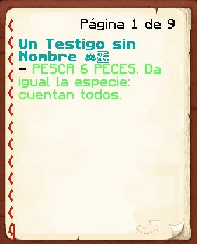
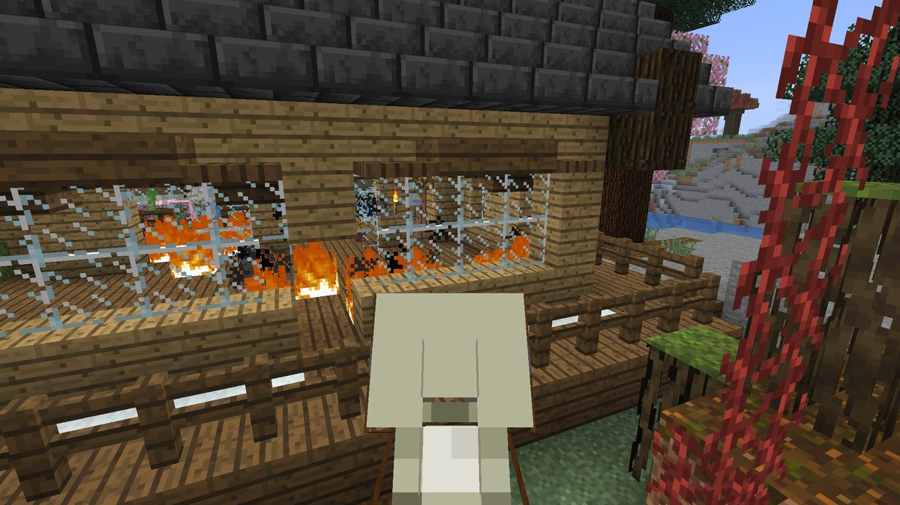

Boletín Oficial del Ayuntamiento del Reino · Se informa, no se alarma
EL HERALDO DEL REINO
Número 2515 de septiembre de 2026Tarde del martes 15 de septiembre a la mañana del miércoles 16
EL MINISTRO LLEGÓ AL FIN DEL MUNDO Y, UN MINUTO DESPUÉS, INFORMÓ DE QUE NO SE PUEDE LLEGAR
A las 23.00 del martes el registro anotó que el Ministro Pan había alcanzado el Fin, el paraje al que esta administración tiene prohibido el paso a todo el vecindario, y el Ministro lo comentó con una sola palabra: «ups». A las 23.01, LetayReaver preguntó en la plaza si había algún sospechoso de haber ido allí. Le contestó el Ministro: «no se puede llegar aún». Esta Oficina no le acusa de nada. Se limita a hacer constar que el único vecino que ha llegado al Fin es el mismo que ha confirmado que no se puede, y que después trajo un mundo entero, avisó de un temblor y el Reino cerró dos veces por revisión del pulso.
Redactado por la Oficina de Prensa del Ayuntamiento
PORTADA
«Ups»: el registro sitúa al Ministro en el único sitio del Reino al que no se puede ir
La tarde había empezado tranquila. A las 22.37LetayReaver saludó al
Ministro, le preguntó si ya se sentía mejor y recibió el parte médico completo:
«sisi, toy bien de hace días». Hablaron de la mudanza de LetayReaver, que llevaba
toda la madrugada anterior aplanando terreno, y el Ministro se echó a reír.
A las 23.00 el registro de hazañas del Reino anotó a nombre del Ministro
Pan la que se titula «¿El Fin?», que es la que se concede a quien llega al
Fin. Esta administración recuerda que el Fin está cerrado a todo el vecindario
y que no figura en ningún encargo. En el mismo minuto, el Ministro escribió en la plaza
una palabra: «ups». Y a las 23.01 el registro le anotó la siguiente,
«Escapada remota», que es la que se concede a quien, ya en el Fin, encuentra por
dónde salir.
A las 23.01, sin que conste que hubiera leído el registro, LetayReaver
preguntó en la plaza: «¿hay algún sospechoso o evidencia de alguien que fue al
Fin?». Contestó el Ministro, en tres mensajes: «no se puede llegar aún»,
«es que estoy mirando una cosa» y, a propósito de que tampoco se puede forjar aún
el metal más duro del Reino, «y menos mal».
A las 23.06 se despidió un momento: «tengo que importar un mundo». Esta
Oficina no sabe qué significa traer un mundo, ni de dónde, ni si paga tasa. Sabe que a las
23.17 el Ministro avisó a la plaza —«cuidado, quizás hay tirón»—, que
LetayReaver lo notó —«como cuatro segundos, se notó»—, que el Ministro contestó
«poco me parece por lo que acabo de hacer», y que el Reino cerró por revisión
del pulso a las 23.19 y otra vez a las 23.33.
Esta Oficina no acusa al Ministro de nada. No dice que haya ido al Fin, porque
el Ministro ha dicho que no se puede, y el Ministro es la autoridad en la materia. Se
limita a publicar el registro en el orden en que se escribió. Y hace constar, porque
también está escrito, que a las 00.37, dictándole a otro vecino cómo presentar una
queja, el Ministro añadió por su cuenta al final del texto: «y que el ministro Pan
nunca robaría un solo cacahuate». Nadie le había preguntado por los cacahuates. El
vecino que tomaba el dictado contestó: «pa mí va a robar».
EL PARTE DEL PULSO
Una hora de pesca sin que el encargo se diera por enterado, y tres puntos que no se ven

El encargo, en el cuaderno de Agustin.F a la 01.27: «pesca 6 peces, da igual la especie: cuentan todos». Contaban todos menos los que se pescaban.Archivo Municipal · pase el ratón para revelarla
Rawson98 volvió al Reino a las 00.03 —«hace mucho no entraba, por
trabajo»— y a las 00.28 ya estaba en el muelle, con la caña. Su encargo le pedía
seis peces de cualquier clase. A la 01.24 informó: «ya estoy hace casi una
hora pescando»; a la 01.25, que había sacado unos veinte, que los iba dejando
en casa porque no le cabían, y que el contador seguía sin moverse. Entre medias pescó
un rayo, que es algo que esta administración no sabía que se pudiera pescar.
No era el único. Agustin.F lo había denunciado en la ventanilla a las
00.38 y otra vez a la 01.27, con el cuaderno delante: «ya pesqué mucho más
de 20 peces y todavía no me da el okey». Y los dos traían peces con
interrogantes en el peso, que nadie en el muelle sabía tasar: el Ministro, preguntado
a la 01.18, dijo «pues no estoy seguro de eso» y se llevó uno para estudiarlo.
El Negociado de Pesca tiene abierto el expediente; esta Oficina informará cuando el
contador se mueva.
A la 01.41 Rawson98 cambió de encargo y de problema: Lo que Callan los
Corderos le mandaba a marcar tres puntos de la casa del Ministro —el frente, el
costado y la parte de atrás—, quince segundos agachado en cada uno, y no había forma
de saber dónde estaban. El Ministro aceptó el encargo para verlo por sí mismo, y a la
01.56 emitió el primer informe: «el puto Duke no dice dónde». A las
02.05, el segundo: «eso es Duke, que está apollardao». Entre los dos
encontraron dos puntos de tres, y a las 02.10 el Ministro se retiró sin terminarlo:
«la vuelvo a probar cuando se arregle».
Esta Oficina desmiente al Ministerio, como ya lo desmintió el martes: el defecto
es de la imprenta municipal, que se olvidó de iluminar los puntos, y Su
Majestad no tuvo nada que ver, como no tiene nada que ver con nada · Y la medida
correctora que sí entró en esta jornada, con el cierre técnico de las 18.38:
los pozos del Reino dan ahora tres vidas, y a la tercera te devuelven
arriba en vez de dejarte bajando para siempre. Ninguna incidencia reviste gravedad
y todas estaban previstas.
SUCESOS
La casa de Rockchango, ardiendo por dentro, y un dueño que no pisó el Reino en toda la jornada

La vivienda de Rockchango a las 07.59, fotografiada por Gaaraham03 desde la baranda: fuego en el suelo de las dos estancias y los cristales intactos. Por ordenanza, en este Reino el fuego no se propaga, y tampoco se apaga.Archivo Municipal · pase el ratón para revelarla
A las 07.59 del miércoles, Gaaraham03 publicó en el grupo vecinal una
fotografía y una frase dirigida al dueño: «alguien quiso quemar tu casa». Añadió,
entre paréntesis, que quien lo hizo «no sabe que el fuego no se propaga», y dejó el
asunto en manos de la Encargada del Orden: «ahí te encargo pa que lo cheques».
El registro permite decir una cosa, y esta Oficina la dice: Rockchango no pisó el
Reino en toda la jornada, así que no pudo verlo ni apagarlo. No permite decir
cuándo se prendió: aquí el fuego no avanza, pero tampoco se consume, y un suelo
puede estar ardiendo desde hace días sin que lo sepa nadie. Así que esta Oficina no
publica lista de quién estaba dentro. Una lista sin hora del suceso no es una
coartada: es un censo con mala intención.
La Encargada del Orden respondió a las 09.35, y conviene reproducir la respuesta
entera: «Mañana. Hoy no hay chamba, a menos que quieras una poli borracha».
ArsarFurro apuntó a las 09.56 que «todos los días así», y el Ministro
zanjó a las 10.02 con una doctrina propia: «poli borracha hace mejor su trabajo, eso es
así». El expediente queda abierto hasta mañana, que es cuando hay chamba.
SOCIEDAD
«Pero qué mentiras son esas»: Cliqueame recurre un titular, y el Ministerio sale en defensa del periódico a su manera
El titular recurrido, del número 23, tal y como lo presentó Cliqueame a las 17.40. Esta Oficina lo reproduce entero porque es suyo y porque lo sostiene.Archivo Municipal · pase el ratón para revelarla
A las 17.40 del martes, Cliqueame publicó en el grupo vecinal un recorte
del número 23 —«ninguno de los de Cliqueame fue Mario»— con una sola línea:
«pero qué mentiras son esas». El recorte se refiere a sus siete defunciones
de la noche de la excavación, que él había atribuido a Mariowo_ y que el registro atribuye
a otros.
A las 17.44, el Ministro Pan salió en defensa de este periódico en dos
mensajes seguidos: «El periódico siempre dice la verdad» y «Menos cuando se
equivoca». Ser℠ hizo la suma en el mismo minuto: «O sea, siempre».
Esta Oficina agradece la defensa y la rechaza, por ese orden. El titular se
mantiene: se escribió con el registro delante y el registro no ha cambiado. Queda a
disposición de Cliqueame la vía del recurso, que en este Reino consiste en decir qué parte
es mentira. Hasta la fecha ha dicho que lo es, que no es lo mismo, y el Negociado de
Rectificaciones no puede rectificar un adjetivo.
ADMINISTRACIÓN
El tablón de denuncias, en tres frases: la queja, el tatuaje y el resumen
El tablón de denuncias tuvo una jornada de pocas palabras y todas pesadas. A las
17.42, Ser℠ presentó una queja contra el cuerpo entero: «los agentes que
se suponen que protegen al pueblo no velan por la imparcialidad, solo cobra y cobra»,
precedida de una valoración general que esta Oficina no reproduce por respeto al
tablón. A las 18.42, ArsarFurro contestó con una intención: «así me lo voy
a tatuar».
Y a la 01.28, la Encargada del Orden resumió el expediente de los obligados, que
llevaba dos números de alegaciones, en siete palabras: «Resumen: no quiero pagar, me
haré víctima». No consta a quién iba dirigido. Consta que, de los dos sancionados, uno
alegó que le obligaron y el otro alegó que le obligó el primero, y que ninguno de los dos
ha pagado todavía. El plazo vence el fin de semana.
Edición imperial · Pliego de Oro · se imprime aparte
LO QUE DICE EL EMPERADOR
Exégesis oficial de las palabras de Su Majestad
Su Majestad habló una vez en la jornada, a las 13.56, en el grupo vecinal y para recomendar la lectura de este periódico. Este Negociado ha tenido que estudiar si el elogio era al periódico o a la portada, y la respuesta está abajo.
Lean la portada, importantísima.
— S. M. el Emperador Duke, a las 13.56
Lo que estaba pasando Lo escribió debajo del enlace al número 23, que acababa de salir con un día de retraso. La portada de ese número es la de la Gran Excavación: nueve vecinos, treinta y ocho minutos de pico y veintinueve defunciones, casi todas a manos de otros vecinos, con el titular que describe al vecindario con una precisión que esta Oficina, por prudencia, no repite. A las 17.40, Cliqueame lo recurrió.
Lectura oficial Obsérvese que el Emperador no dice «lean el periódico»: dice «la portada», y añade el adjetivo. Sabe que el vecindario lee el titular y se va, y le pide que se quede en lo único que de verdad necesita saber. Y elige «importantísima» y no «importante», porque un superlativo es una orden dicha con educación. Tres horas y cuarenta y cuatro minutos después, un vecino se había leído la portada con tanta atención que la recurrió. El Emperador consiguió lo que pidió, que es lo único que esta Oficina le ha visto hacer siempre.
★ ★ ★
Oficina de Prensa · Negociado de Exégesis Imperial
Gabinete de Higiene Mental del Ayuntamiento · consulta no solicitada
EL DIVÁN DEL REINO
Una jornada corta da para dos fichas, y las dos resultan ser de gente que no se rinde
Jornada de seis vecinos y doscientas dieciocho intervenciones, de las que noventa y siete son del Ministro y, por tanto, no cuentan (ver la nota). Las otras ciento veintiuna se reparten entre dos personas, y el Gabinete ha podido dedicarles la consulta entera.
Rawson98
El Anzuelo
Paciencia sin retorno
«Ya estoy hace casi una hora pescando y todavía no me dio para pasar la misión»Rawson98, a las 01.24
Perfil
81 intervenciones en 126 minutos, una cada minuto y medio, y siete de ellas
son preguntas al Ministro: qué se hace con los peces raros, dónde se venden, cómo se
tasan, si le regala una espinela, cómo es el encargo de su casa. Veintisiete son de
dos palabras o menos. El Gabinete describe el cuadro como el de un sujeto que no
protesta: pregunta, y que cuando no le contestan, sigue pescando.
La jornada
Volvió tras una larga ausencia laboral y fue directo a un muelle. Pescó unos
veinte peces para un encargo que pedía seis y que no se enteró de ninguno, y en
lugar de dejarlo, los fue llevando a casa por si acaso. A la 01.41 pasó a un
encargo que le pedía encontrar tres puntos invisibles y encontró uno él solo. Su único
juicio desfavorable de la noche fue sobre el Ministro, y fue una predicción:
«pa mí va a robar». Tres minutos después de que el Ministro se retirase, el
sujeto falleció, sin causa consignada. El Gabinete no relaciona los dos hechos.
Escalas del gabinete (sobre 10)
Tolerancia a la espera10
Confianza en el Ministerio2
Peces pescados sobre peces pedidos3
Capacidad de llevar a casa lo que no sirve9
Pronóstico para la próxima jornadaFavorable. El sujeto tiene veinte peces guardados en casa para un encargo que, en cuanto empiece a contar, le pedirá seis. Se le recomienda no tirar ninguno.
LetayReaver
La Llanura
Nivelación compulsiva
«Toda la madrugada me quedaba aplanando el terreno»LetayReaver, a las 22.39
Perfil
40 intervenciones en dos horas y cuarto, y en ellas el sujeto hizo tres
cosas: interesarse por la salud del Ministro, preguntar si había un sospechoso de
haber ido al Fin y explicar en detalle una traducción de dibujos animados que ni él
mismo sabe cómo termina. El Gabinete ya le abrió ficha el día que fundó un reino a
cuatro mil bloques; hoy consta que sigue allí, allanándolo.
La jornada
El sujeto pasó la madrugada anterior entera nivelando terreno para una
ciudad que todavía no tiene casas, y lo cuenta sin queja, como quien informa del tiempo.
El Gabinete lo clasifica como nivelación compulsiva: antes de levantar nada,
todo tiene que estar llano, y todo es mucho. Es, además, el único vecino de la jornada
que hizo la pregunta correcta en el minuto correcto —«¿hay algún sospechoso?»— a
la única persona que no se la podía contestar. Se retiró a las 00.53 con un arco nuevo
que le salió de una llave de cofre y una despedida: «que me están esperando en la
chamba».
Escalas del gabinete (sobre 10)
Instinto de investigación9
Oportunidad del interlocutor elegido1
Terreno aplanado por hora8
Casas levantadas0
Pronóstico para la próxima jornadaExcelente a largo plazo. Una ciudad que empieza por el suelo tarda más, pero no se cae. El Gabinete recomienda que la próxima pregunta sobre el Fin se la haga a otro.
Al Ministro Pan, que intervino noventa y siete veces, este Gabinete no ha hallado nada digno de estudio. Se hace constar que él tampoco lo había solicitado. Las escalas son de elaboración propia y se obtienen contando lo que consta en el registro.
El Gabinete
El parte de la jornada
Duración de la jornada
14 h 58 min, de las 17:37 a las 08:35
Cuentas en el Reino
7 — 6 vecinos y el Ministro
Altas tramitadas
1, xavito_lol, a las 21:39
Máxima concurrencia
3 a la vez, a las 00:03
Defunciones
1
Vecinos que llegaron al Fin
1
Vecinos a los que se permite llegar al Fin
0
Mundos traídos por el Ministerio
1
Temblores anunciados
1, de unos cuatro segundos
Cierres por revisión del pulso
2
Declaraciones espontáneas de honradez del Ministro
1
Vecinos que no se las creyeron
1
Peces pescados para un encargo de seis
unos 20
Peces contados
0
Puntos de la casa del Ministro encontrados
2 de 3
Casas ardiendo
1
Dueños presentes
0
Agentes de servicio
0, hasta mañana
Titulares recurridos
1
Titulares rectificados
0
Intervenciones del Emperador
1, sobre la portada
Aviso oficial
Sobre el Fin, este Ayuntamiento recuerda que el paraje sigue cerrado a todo el
vecindario y que así seguirá hasta que se inaugure con su acto. La presencia del Ministerio
en él, si la hubo, tuvo carácter técnico, y el Ministerio ha confirmado en persona que
no se puede llegar, lo cual cierra el asunto.
Sobre la pesca, se ruega a los vecinos con encargos de muelle que conserven lo
pescado, interrogantes incluidos. El Negociado de Pesca estudia por qué el contador no se
entera de lo que sale del agua, y cuando se entere, se enterará de todo.
Sobre el incendio, la Encargada del Orden atenderá el caso mañana, en las
condiciones que ella misma ha descrito. Se recuerda que en este Reino el fuego no se
propaga: quien quiera quemar algo tendrá que hacerlo entero y a mano, y eso deja
tiempo a los vecinos para mirar.
Y sobre Rawson98, fallecido una vez sin causa conocida, esta corporación le desea
pronta recuperación, que en este Reino es inmediata, y le recuerda que tiene veinte peces
en casa que algún día valdrán para algo.